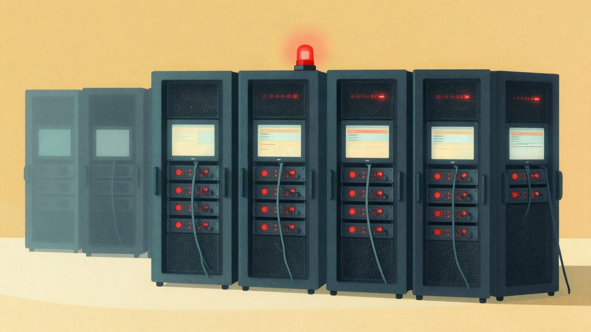

Microsoft je pokrenuo „Code Red“ nakon 24-satnog ispada Exchange Onlinea, Teamsa i Copilota

Nakon ispada od 12. do 13. studenoga, koji je pogodio Exchange Online, Outlook, Teams i Copilot, Microsoft je pokrenuo hitnu inženjersku reorganizaciju pod nazivom Code Red. Microsoft tvrdi da je uzrok bio neotkriven problem sa skalabilnošću u Windowsu. Cilj je da se globalni oporavak usluga ubuduće obavi unutar jednog sata.
Microsoft je pokrenuo inicijativu „Code Red“ nakon ispada koji je 12. i 13. studenoga trajao 24 sata i pogodio Exchange Online, Outlook, Teams, Copilot i druge usluge Microsofta 365. Prema dokumentima koje je vidio Reuters, to je događaj s najvećim utjecajem na korisnike u povijesti Exchange Onlinea.
Microsoft tvrdi da je uzrok bio neotkriven problem sa skalabilnošću u Windowsu, koji je u sustav ušao u srpnju. Prema njihovim riječima, ispad nije povezan s kibernetičkim napadom ni s AI agentima. Izvršni direktor Satya Nadella javno se ispričao zbog prekida.
Teško snalaženje u podacima
Potpredsjednica Amanda Silver je u internom dopisu u ponedjeljak situaciju opisala kao „fog of war“. Na problemu su radili iskusni inženjeri, no članovi tima su razmijenili više od 11.000 poruka u 11 Teams chata dok su tražili uzrok. Interni sustavi za praćenje bili su razdvojeni, a dijagnostički podaci razbacani, pa je bilo teško održati zajedničku sliku problema, hipoteza i odluka.
Silver se pozvala i na analizu Charlesa Lamanne, izvršnog potpredsjednika za Copilot, agente i platformu. Prema njezinu dopisu, zahvaćena komponenta imala je „otprilike deset godina prihvatljivih kvarova“, što upućuje na to da su se slabosti godinama nakupljale.
Pet radnih tokova
Code Red ima pet radnih tokova, među kojima su smanjenje opterećenja sustava, geografsko razdvajanje prometa i ubrzanje mehanizama oporavka. Microsoft želi da se u budućim incidentima usluge na globalnoj razini vrate u rad unutar jednog sata. Za brže analiziranje podataka o stanju sustava i otkrivanje problema planira koristiti AI agente.
Inženjerski timovi zaduženi za infrastrukturu Microsofta 365 dobivaju stroži nadzor. Jason Henderson, predsjednik Microsoft 365 Core, rekao je da će se svaki dan sastajati s vodstvom tima Substrate, uz tjedne preglede.
Rješava se i sporo uvođenje ispravaka. Henderson je u ranijem dopisu naveo da je hitni ispravak za usluge Microsofta 365 Core do globalne primjene trebao pet do šest dana. „Za naše najhitnije sigurnosne probleme moramo od otkrivanja doći do sigurne globalne primjene u jednom satu“, napisao je.
„Code Red znači da je ovo posao s najvišim prioritetom za naš tim“, poručio je Henderson zaposlenicima u dopisu u petak. Microsoft navodi da je posvećen sprječavanju novih ispada i brzom rješavanju problema kad do njih dođe.
Izvor: Interesting Engineering
Povezani članci
 Flipper One je na Kickstarteru skupio 2 milijuna dolara u pola sata17. studenoga 2026.
Flipper One je na Kickstarteru skupio 2 milijuna dolara u pola sata17. studenoga 2026.- Waymo robotaxiji i dalje prolaze pokraj školskih autobusa, NHTSA je otvorila novu istragu9. studenoga 2026.
- Hakeri su navodno pokušali zagrijati zamrzivače francuske službe za krv s -30 na 110 °C4. studenoga 2026.